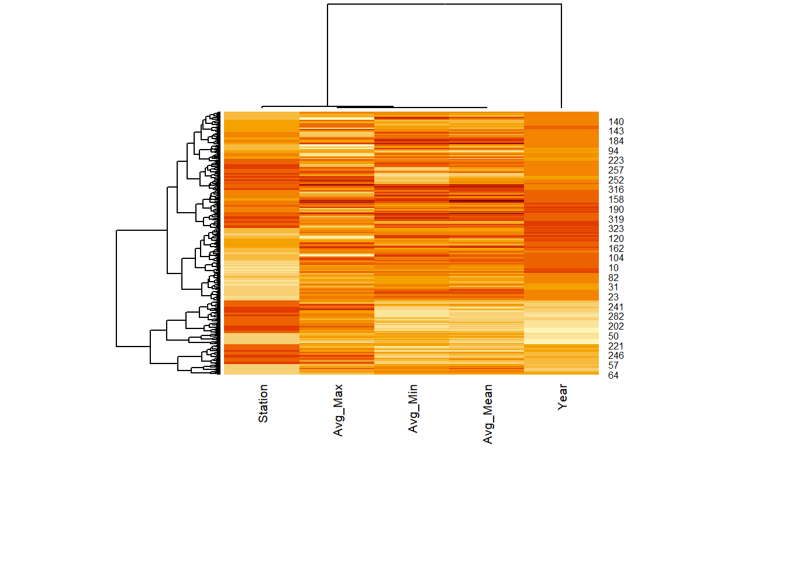

pacman::p_load(tidyverse, ggdist, ggridges, heatmaply, ggiraph)EDA_Noel
data <- list.files(path="WeatherStation_Cleaned", pattern="*.csv", full.names=TRUE)
data [1] "WeatherStation_Cleaned/Admiralty.csv"
[2] "WeatherStation_Cleaned/Ang Mo Kio.csv"
[3] "WeatherStation_Cleaned/Boon Lay (East).csv"
[4] "WeatherStation_Cleaned/Changi.csv"
[5] "WeatherStation_Cleaned/Choa Chu Kang (South).csv"
[6] "WeatherStation_Cleaned/Clementi.csv"
[7] "WeatherStation_Cleaned/East Coast Parkway.csv"
[8] "WeatherStation_Cleaned/Jurong (West).csv"
[9] "WeatherStation_Cleaned/Khatib.csv"
[10] "WeatherStation_Cleaned/Marina Barrage.csv"
[11] "WeatherStation_Cleaned/Newton.csv"
[12] "WeatherStation_Cleaned/Pasir Panjang.csv"
[13] "WeatherStation_Cleaned/Paya Lebar.csv"
[14] "WeatherStation_Cleaned/Seletar.csv"
[15] "WeatherStation_Cleaned/Sembawang.csv"
[16] "WeatherStation_Cleaned/Tai Seng.csv"
[17] "WeatherStation_Cleaned/Tengah.csv"
[18] "WeatherStation_Cleaned/Tuas South.csv" weather <- read_csv(data)Rows: 168836 Columns: 13
── Column specification ────────────────────────────────────────────────────────
Delimiter: ","
chr (10): Station, Daily Rainfall Total, Highest 30 Min Rainfall, Highest 60...
dbl (3): Year, Month, Day
ℹ Use `spec()` to retrieve the full column specification for this data.
ℹ Specify the column types or set `show_col_types = FALSE` to quiet this message.weather <- weather %>%
rename('Mean_Temp' = 'Mean Temperature',
'Max_Temp' = 'Maximum Temperature',
'Min_Temp' = 'Minimum Temperature') %>%
mutate(Mean_Temp = as.double(Mean_Temp),
Max_Temp = as.double(Max_Temp),
Min_Temp = as.double(Min_Temp))Warning: There were 3 warnings in `mutate()`.
The first warning was:
ℹ In argument: `Mean_Temp = as.double(Mean_Temp)`.
Caused by warning:
! NAs introduced by coercion
ℹ Run `dplyr::last_dplyr_warnings()` to see the 2 remaining warnings.heatmap
temp <- weather %>%
select(c(1,2,9:11)) %>%
drop_na() %>%
group_by(Station, Year) %>%
summarise(Avg_Mean = mean(Mean_Temp),
Avg_Max = mean(Max_Temp),
Avg_Min = mean(Min_Temp))`summarise()` has grouped output by 'Station'. You can override using the
`.groups` argument.temp_mat <- data.matrix(temp)
temp_heatmap <- heatmap(temp_mat,
scale="column", # normalise by columns
cexRow = 0.6, # font size for y-axis
cexCol = 0.8, # font size for x-axis
margins = c(10, 4)) # to display plot with full labels shown
time series - average of mean temperatures
ggplot(data = temp,
aes(x = Year,
y = Avg_Mean,
group = Station,
color = Station)) +
geom_line(linewidth = 1.2) +
theme_classic() +
ylab("Daily Mean Temperature (°C)") +
xlab("Day of Month") +
ggtitle("Daily Mean Temperature Recorded At Tengah Weather Station",
subtitle = "September 1986, 1993, 2003, 2013, 2023") +
theme(plot.title = element_text(size = 10),
plot.subtitle = element_text(size = 8)) 
temp$mean_tooltip <- c(paste0(
"Year: ", temp$Year,
"\n Station: ", temp$Station,
"\n Mean Temp: ", temp$Avg_Mean, "°C"))
line <- ggplot(data = temp,
aes(x = Year,
y = Avg_Mean,
group = Station,
color = Station,
data_id = Station)) +
geom_line_interactive(size = 1.2,
alpha = 0.4) +
geom_point_interactive(aes(tooltip = temp$mean_tooltip),
fill = "white",
size = 1,
stroke = 1,
shape = 21) +
theme_classic() +
ylab("Annual Mean Temperature (°C)") +
xlab("Year") +
ggtitle("Annual Average of Mean Temperatures") +
theme(plot.title = element_text(size = 10),
plot.subtitle = element_text(size = 8))
girafe(ggobj = line,
width_svg = 8,
height_svg = 6 * 0.618,
options = list(
opts_hover(css = "stroke-width: 2.5; opacity: 1;"),
opts_hover_inv(css = "stroke-width: 1;opacity:0.6;")))time series - average of max temperatures
temp$max_tooltip <- c(paste0(
"Year: ", temp$Year,
"\n Station: ", temp$Station,
"\n Max Temp: ", temp$Avg_Max, "°C"))
line <- ggplot(data = temp,
aes(x = Year,
y = Avg_Max,
group = Station,
color = Station,
data_id = Station)) +
geom_line_interactive(size = 1.2,
alpha = 0.4) +
geom_point_interactive(aes(tooltip = temp$max_tooltip),
fill = "white",
size = 1,
stroke = 1,
shape = 21) +
theme_classic() +
ylab("Annual Max Temperature (°C)") +
xlab("Year") +
ggtitle("Annual Average of Max Temperatures") +
theme(plot.title = element_text(size = 10),
plot.subtitle = element_text(size = 8))
girafe(ggobj = line,
width_svg = 8,
height_svg = 6 * 0.618,
options = list(
opts_hover(css = "stroke-width: 2.5; opacity: 1;"),
opts_hover_inv(css = "stroke-width: 1;opacity:0.6;")))time series - average of min temperatures
temp$min_tooltip <- c(paste0(
"Year: ", temp$Year,
"\n Station: ", temp$Station,
"\n Min Temp: ", temp$Avg_Min, "°C"))
line <- ggplot(data = temp,
aes(x = Year,
y = Avg_Min,
group = Station,
color = Station,
data_id = Station)) +
geom_line_interactive(size = 1.2,
alpha = 0.4) +
geom_point_interactive(aes(tooltip = temp$min_tooltip),
fill = "white",
size = 1,
stroke = 1,
shape = 21) +
theme_classic() +
ylab("Annual Min Temperature (°C)") +
xlab("Year") +
ggtitle("Annual Average of Min Temperatures") +
theme(plot.title = element_text(size = 10),
plot.subtitle = element_text(size = 8))
girafe(ggobj = line,
width_svg = 8,
height_svg = 6 * 0.618,
options = list(
opts_hover(css = "stroke-width: 2.5; opacity: 1;"),
opts_hover_inv(css = "stroke-width: 1;opacity:0.6;")))